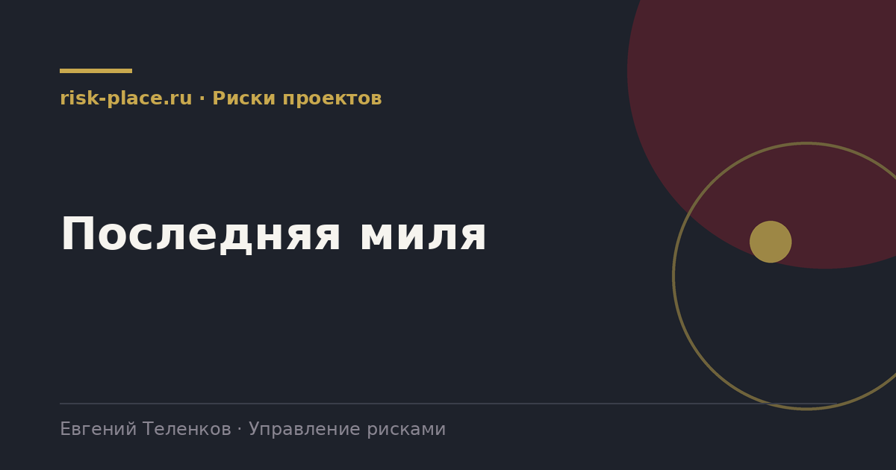

risk-
risk-Адресность
- Поручение доводится напрямую исполнителю, а не через цепочку. Подтверждение получения фиксируется
Главная · Библиотека · Риски проектов · Последняя миля
Библиотека · Риски проектов
Самая дорогая потеря в управлении рисками происходит не при оценке, а между решением и действием.

Решение принято на комитете, записано в протокол, ответственный назначен. Через квартал выясняется, что мероприятие не выполнено. При разборе почти всегда обнаруживается одна из пяти причин, и ни одна из них не связана с нежеланием работать.
Ответственный не знал о поручении, потому что протокол ушел его руководителю. Поручение сформулировано так, что непонятно, что считать выполнением. Не выделены ресурсы, а обращаться за ними надо к тому, кто поручение и дал. Сроки поручения конкурируют с операционными задачами, у которых есть ежедневный контроль. Никто не спросил результат до наступления срока.
Каждый устраняет одну из причин.
Три показателя, которых достаточно.
| Показатель | Как считается | Целевое значение |
|---|---|---|
| Доля выполненных в срок | Выполнено в срок к общему числу поручений с наступившим сроком | Не ниже 85 процентов |
| Средняя просрочка | Среднее число дней просрочки по невыполненным | Не более 10 дней |
| Доля переносов срока | Число поручений с продленным сроком к общему числу | Не выше 20 процентов |
Показатели считаются по подразделениям и показываются с фамилиями руководителей. Обезличенная статистика не меняет поведение.
Из опыта проектов по повышению исполнительской дисциплины сильнее всего работает один механизм, регулярная публичная сверка статуса поручений в присутствии первого лица. Не наказание, а именно видимость.
Второй по силе механизм это разбор причин невыполнения, а не фиксация факта. Если выясняется, что поручение невыполнимо в заданный срок при имеющихся ресурсах, это управленческая информация, а не проступок. Компании, которые различают эти две ситуации, через год получают дисциплину без давления. Компании, которые не различают, получают формальные отметки о выполнении при нерешенной проблеме.
Частые вопросы
Одна форма для любого вопроса
Расскажем о ближайших датах, предложим формат под ваш состав участников и назовем порядок бюджета.
Предпочитаете почту — напишите на info@risk-place.ru. Адрес: Москва, улица Скаковая, 32с2.